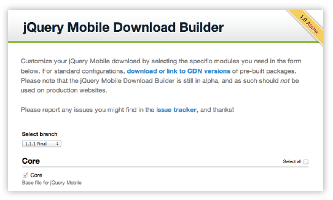
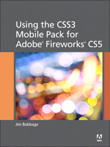
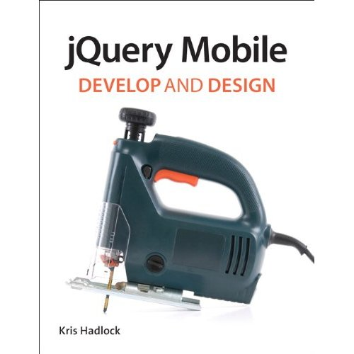

Seriously cross-platform with HTML5
jQuery mobile framework takes the "write less, do more" mantra to the next level: Instead of writing unique apps for each mobile device or OS, the jQuery mobile framework allows you to design a single highly-branded web site or application that will work on all popular smartphone, tablet, and desktop platforms. Device support
Help us support all platforms: Donate test devices to the jQuery Mobile project
Easy to use: Try it now!
jQuery Mobile's emphasis on semantic markup and progressive enhancement makes it super easy to use. If you know basic HTML, you can start building mobile sites right away. Try this cool drag-and-drop UI builder to explore what the library can do, or check out some of the resources below to learn more.
Demos & documentation Resources: Books, plugins, tutorials
Powered by Codiqa
Theming: Built to be branded
We believe that your web site or app should feel like your brand, not any particular OS. To make building highly customized themes easy, we've created ThemeRoller for Mobile to make it easy to drag and drop colors and download a custom theme. For polished visuals without the bloat, we leverage CSS3 properties like text-shadow, box-shadow, and gradients.

Download builder: Customize for speed
We now have a tool to let you build you own custom bundle that contains only the components you need. The builder will generate a custom JavaScript and both a full and structure-only theme stylesheet for production use.
Try the download builder tool now (Alpha).
Get inspired: Built with jQuery Mobile
There are hundreds of popular web sites and apps built with jQuery Mobile. Here's a small sampling of sites collected on jQM Gallery - be sure to check that site often to see what's new and notable.
Books & Resources: Read up and learn more
There is a rich community and ecosystem around jQuery Mobile to help you get up to speed fast. In addition to a wide selection of books, there are Apps & Frameworks, Plugins, Extensions, Tools, Themes, Articles & Tutorials all conveniently collected in the Resources area.
|
“Master Mobile Web Apps with jQuery Mobile”
by Matt Doyle,
Elated Books |
|
“jQuery Mobile: Up and Running”
by Maximiliano Firtman,
O’Reilly Media
Spanish version |
|
“jQuery Mobile”
By Jon Reid,
O’Reilly Media |
 |
“jQuery Mobile First Look”
by Giulio Bai,
Packt Publishing |
|
“Adobe Dreamweaver CS5.5: Designing and Developing for Mobile with jQuery, HTML5, and CSS3”
by David Powers,
Adobe Press |
 |
“Using the CSS3 Mobile Pack for Adobe Fireworks CS5”
by Jim Babbage,
Peachpit Press |
|
“Pro jQuery Mobile”
by Brad Broulik,
Apress |
|
“Sams Teach Yourself jQuery Mobile in 10 Minutes”
by Steven E. Holzner,
Sams Publishing |
|
“jQuery Mobile Web Development Essentials”
by Raymond Camden and Andy Matthews,
Packt Publishing |
|  |
“jQuery Mobile: Develop and Design”
by Kris Hadlock,
Peachpit Press |
|
“Sams Teach Yourself jQuery Mobile in 24 Hours”
by Phillip Dutson,
Sams Publishing |
How to Get Involved
We welcome input and ideas from the jQuery community through our GitHub repo, blog, forum, and Twitter.
The jQuery Project is financed entirely by donations and contributions from the jQuery community. Please support the project: Make a donation or contact the project lead, Todd Parker, about corporate sponsorship opportunities.